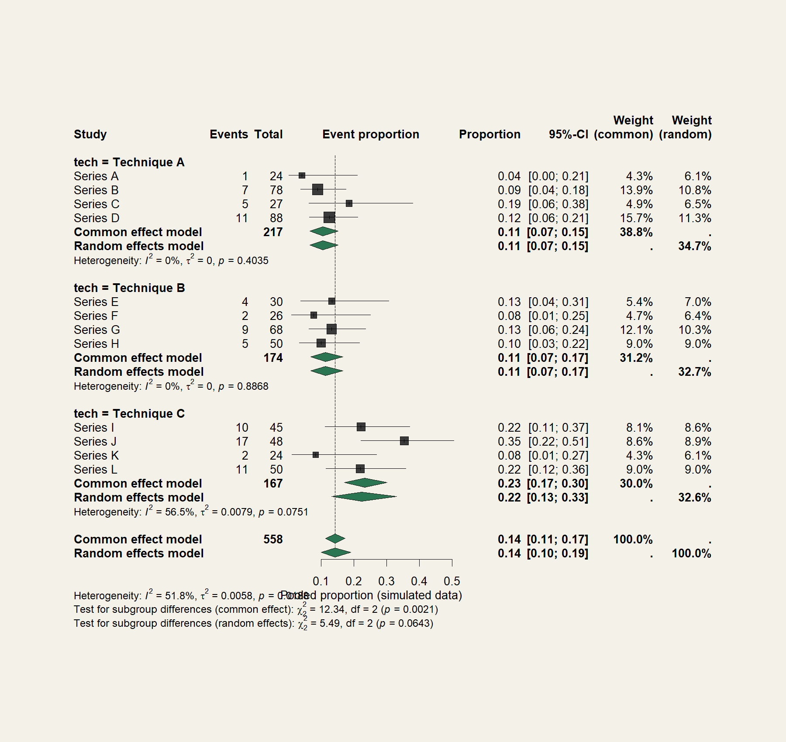

Keeping the Outflow Open in TMVR
Replacing the mitral valve through a catheter can block the heart's own outflow tract. Several techniques exist to prevent that, and almost no trials compare them.
Each prevention technique lives in its own small case series, so a conventional two-arm meta-analysis was impossible. The comparison had to be built indirectly, from pooled single-arm proportions, technique by technique.
How the problem became a design
Clinical question
Which LVOT obstruction prevention technique carries the best success and safety profile?
The evidence
Small single-arm series per technique, extreme event proportions, no head-to-head trials
The design
Transformed proportion pooling with technique subgroups, plus paired pre/post hemodynamics
The answer
A structured cross-technique comparison, presented at TCT and published in JACC
The decisions that mattered
Freeman-Tukey double arcsine transform for the pooling.
Proportions near 0 or 100 percent misbehave on the raw scale. The transform stabilizes their variance so small series do not distort the pool.
Subgroup pooling by prevention technique.
With no comparative trials, pooling each technique separately and reading them side by side is the honest version of the comparison clinicians wanted.
Paired pre/post analysis of neo-LVOT area and gradients.
Within-patient change in the anatomy and hemodynamics tells you the mechanism worked, not just that patients survived.
Dual extraction with independent validation.
Every value was extracted twice and cross-checked before it touched the model. In a literature of small series, one transcription error can move a pooled estimate.
What this looks like

Illustrative forest plot from simulated data: single-arm proportions pooled within technique subgroups. The real figures are in the JACC abstract.
The core of it, in R
# Pooled proportions, stabilized, grouped by technique
m <- metaprop(event = events, n = total,
studlab = series,
sm = "PFT", # Freeman-Tukey double arcsine
method.tau = "DL",
subgroup = technique)
forest(m, xlab = "Event proportion")
# Mechanism check: within-patient change after the technique
delta <- post_gradient - pre_gradient
t.test(delta) # paired shift in gradientsWhere it landed
Published as TCT-30: Comparative Meta-Analysis of LVOTO Prevention Techniques in TMVR: A Subgroup Evaluation of Hemodynamic and Clinical Outcomes in the Journal of the American College of Cardiology, October 2025, with me as first author.